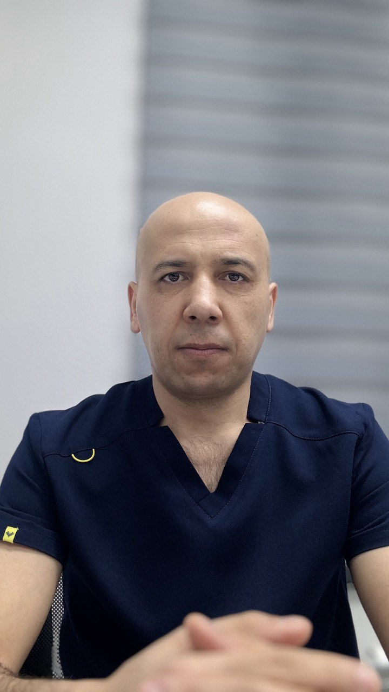

Врач-оториноларинголог • эндоскопический хирург • cтаж более 15 лет
Записаться на приём
Врач-оториноларинголог высшей категории.
Диагностика и лечение уха, горла и носа.
📍 EMU Clinic / AVISA Med Servis
Врач-оториноларинголог с клиническим опытом более 15 лет. Провожу диагностику и лечение заболеваний носа, околоносовых пазух, уха и горла у взрослых и детей. Использую современные эндоскопические методы лечения.
📞 Телефон:
+998 94 649 96 11
📸 Instagram:
@dr.raufyuldashev
📍 Приём по предварительной записи